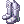

Battlegrounds
Battlegrounds is a form of structured PvP in Ragnarok Online. It consists of various game modes where players are randomly split between teams and must fulfill objectives to win.
Commands
- @joinbg - Puts you in the Battlegrounds queue. All buffs/debuffs will be removed upon joining and, of course, you can only do this in Towns or the BG Lobby.
- @partybg - [Party Leader Only][Active During Battlegrounds Happy Hour Only]Puts your 2-person party in the Battlegrounds queue.
- @leavebg - Removes you from the Battlegrounds queue.
- @listenbg - Toggles the notifications regarding the Battlegrounds player count and the current mode in rotation.
- @voteskip - Votes to skip the current mode in rotation and changes it to the next in line without having to wait. Requires 6 votes and has a cooldown.
- @go bg or @go 38 - Sends you to the Battlegrounds Lobby.
- @guildskill(gs) ec/bo/rs/rg - Only available to the Team Leader. Casts the Team/Guild skills: EC - Emergency Call, BO - Battle Orders, RG - Regeneration, RS - Restore.
- @leader <player> - Only available to the Team Leader. Switches team leadership to a player of your choice.
- @voteleader <player> - Vote to change leader to specified player. If no player name is provided, the vote will be cast to randomly re-assign the leader to another member. Once enough votes are given, the leader will be changed.
- @order <message> - Only available to the Team Leader. Team Leaders, to display a global message with a big font size to your members.
- @hidecostume - hides all headgears in BG/WoE
Basics
See also:Siege Customizations, A Beginner's Guide to BG
- Players must be level 190 or higher to join Battlegrounds.
- The matches have various player number requirements; enough players must be assembled before matches can begin. Players can join in the match while it's ongoing at anytime, with the exception of Krieger von Midgard where dropping in is only allowed during the preparation phase.
- Participation in battlegrounds is rewarded with Valor Badges and Siege Tokens (for those who played War of Emperium or Draft War of Emperium, with the number gained depending on if you win or lose. These badges can be exchanged for various rewards at the Battlegrounds Lobby. The badges are account-bound.
- When a match starts, one player at random in each team is chosen to be the Team Leader. The Leader has access to the Guild Skills through @guildskill
- When a player dies in a match, there is a delay before that player can re-enter the match, they can click the Return to Battle NPC to do so. The Healer NPC provides access to storage, regaining your mount/Madogear and equipment repairs. Conquest and Krieger von Midgard have a few differences, read their sections below for more details.
- The battlegrounds follow War of Emperium mechanics rather than regular PvP mechanics.
How to join
You may join the Battlegrounds queue by using the @joinbg command. You automatically queue up for all modes, but the game will only look for players for one mode at a time, the current mode is displayed in chat. The modes will keep rotating until the minimum amount of players to start the current mode is reached. This process can be sped up using @voteskip or @vs
The mode rotation is as follows, in bold are the big modes, a KvM is always inserted between big modes due to its speed and low player count requirement:
Triple Inferno -> Krieger von Midgard -> Conquest -> Krieger von Midgard -> Guardian Battle -> Krieger von Midgard -> Stone Control -> Krieger von Midgard -> Triple Inferno -> Krieger von Midgard -> ...
Battlegrounds Lobby
The lobby's where you can find various helpful NPCs to aid players after Battlegrounds matches. It's also where Valor Badges can be traded for various rewards. The NPCs in the lobby are as follows:
- Daily Bounty - Everyday you can get an extra reward if you win 5 Battlegrounds matches until midnight server time. The win counter will reset to 0 even if you haven't completed the daily. The rewards are 150 Valor Badges, 15 Proofs of Loyalty and 2 Gold Coins
- Kafra Staff - Provides access to the regular Kafra options.
- Repair Specialist - A faster way to repair equipment, the price is the same as the Kafra.
- Rental Specialist - Restores lost Madogear or mount for free.
- Build Manager - Allows players to save/load both stat and skill builds.
- Erundek - Creates a server announcement requesting players to join Battlegrounds. Has a cooldown shared between all players.
- Sketchy Dealer - Sells HP and SP potions alongside other consumables for Valor Badges. The Heroic Backpack, Immune Shield and Enhanced Variant Shoes are not account-bound.
- Telma - Sells various catalysts for classes' skills for just Valor Badges. These catalysts can only be used in Battlegrounds.
- Glorious Blacksmith - Sells Glorious weapons and armors.
- Weaponsmith - Sells other Battlegrounds weapons such as the Valorous and Brave sets.
- Armorsmith - Sells other Battlegrounds armors much like the Weaponsmith.
- Barricade Architect - Allows players to make Barricade Cards after 10 victories achieved per day in the Battlegrounds.
Game modes
Triple Inferno
- Requires 9 players to start
- Players are randomly split into three even teams: Red Team, Blue Team, Green Team
- The objective is to score 30 points. If the time runs out, the team with most points wins.
- The winners get 100 Valor Badges, the losers get 30 Valor Badges.
- On death, players will drop one skull of their own team color alongside ANY other skulls they may have on them. Any player can pick them up as if they were normal items.
- Each team spawns next to two pillars. If you have enemy skulls, you can touch the pillars (just pass by them, about 1-2 cell range) to turn them into points.
- Skulls of your own team color cannot be turned to points. Picking them up merely serves to prevent the enemy from capturing them. (You will still drop them on death)
- Emergency Call is disabled in this game mode.
Stone Control
- Requires 8 players to start
- Players are randomly split into two even teams: Red Team and Blue Team
- The objective is to score 50 points. If the time runs out, the team with most points will win.
- The winners get 70 Valor Badges, the losers get 25 Valor Badges.
- Each team spawns with a 6 black spots in their base, these are slots to put Stones in. Stones will start to give your team points if they're dropped on these. More stones, more points. (Just touch the spots to capture the stone)
- When the stone carrier dies, the stone will be dropped on the spot where the carrier died. If any player touches it, they will take it.
- Stone carriers cannot use potions or skills and they also have their movement speed reduced (Cannot be increased or decreased further) and will constantly use the /help emote.
- Emergency Call is disabled in this game mode.
Conquest
- Requires 10 players to start
- Players are randomly split into two even teams: the attacking team and the defending team.
- The objective of the attacking team is to destroy the Emperium. The defending team wins if they successfully defend the castle until time runs out.
- The winners get 120 Valor Badges, the losers get 40 Valor Badges.
- This mode is played on a random War of Emperium: Second Edition castle. The game mode is essentially WoE with shorter duration and the randomly arranged teams.
- The match's timer extends when the attacking team successfully destroys a set of Barricades or destroy a Guardian Stone.
- On death, the player will automatically return to battle after some time passes, unlike other modes where clicking the Return to Battle NPC will send you back whenever you want.
- Conquest holds some differences from regular War of Emperium:
- Team Leaders cannot repair Barricades or Guardian Stones.
Krieger von Midgard
- Requires 6 players to start.
- Players are randomly split into two even teams: Red Team and Blue Team.
- The objective is to kill all players in the enemy team. If the time runs out, the team with most players alive will win.
- The winners get 30 Valor Badges, the losers get 10 Valor Badges.
- Each team spawns in a small preparation room where they can prepare for battle. Players other than the initial 6 can only drop-in the game during this period (Through @joinbg).
- On death, players are returned to the preparation room to await the battle's result and receive their rewards.
- Emergency Call is disabled in this game mode.
Guardian Battle
- Players are randomly split into two even teams: Red Team and Blue Team.
- A guardian will spawn at the base of each team at the beginning of the round.
- The objective is to destroy the enemy guardian before your guardian is destroyed. The first team that destroys the enemy guardian wins the round.
- Guardians do not move, but have a large attack range with a few skills.
- Two Ballistic Archers will spawn in the middle of the map. Players may bring supplies to these Archers to launch a heavy attack at the enemy guardian.
- If both guardians are still alive at the end of 8 minutes, the round will end with a tie.
Shops
Playing in Battlegrounds rewards Valor Badges. These can be exchanged to various NPCs for a large variety of supplies and equipment related to Battlegrounds and PVPing in general.
Telma
Telma is a special merchant who is also available in the respawn points of every game mode. She sells many consumables that are only usable in BG and/or War of Emperium, such as:
| Telma | |||
|---|---|---|---|
| Image | Name | Price | Description |
 25 Siege's Concentrated Golden Syrup Potion 25 Siege's Concentrated Golden Syrup Potion
|
1 Valor Badge |
Recovers a large amount of HP | |

|
 5 Equipment Repair Spell Book 5 Equipment Repair Spell Book
|
1 Valor Badge | Weapon Repair Level 1 is usable with this Scroll. |
Sketchy Dealer
The Sketchy Dealer sells potions and BG related consumables, as well as a few general equipment pieces, such as:
| Sketchy Dealer | |||
|---|---|---|---|
| Image | Name | Price | Description |

|
 Field Manual Field Manual
|
750 Valor Badges |
+ 200% EXP from Mob Kills for 60 minutes.
|
 Heroic Backpack [1] Heroic Backpack [1]
|
750 Valor Badges |
A backpack befitting of any hero.
If refined to +9 or higher and base stats (without modifiers) is equal to 90 or higher,
Class: Garment
| |
 Immune Shield [1] Immune Shield [1]
|
750 Valor Badges |
Very unique, square formed shield with a special jewel on it which protects from physical power.
| |
 Enhanced Variant Shoe [1] Enhanced Variant Shoe [1]
|
750 Valor Badges |
Awkwardly designed shoes though you can see the creator's intention to make these shoes with higher quality.
| |
Siege Supplier
The Siege Supplier sells every WoE set. The WoE sets provide the highest reduction against Player damage, but only in PVP game modes.
| Siege Supplier | |||
|---|---|---|---|
| Image | Name | Price | Description |

|
WoE Shoes [1] | 800 Valor Badges | *Stats during WoE & PVP
MDEF +10.
|
 WoE Boots [1] WoE Boots [1]
|
800 Valor Badges | *Stats during WoE & PVP
MDEF +5.
| |
|  WoE Greave [1] | 800 Valor Badges | *Stats during WoE & PVP
MDEF +1.
| |
 WoE Muffler [1] WoE Muffler [1]
|
600 Valor Badges | *Stats during WoE & PVP
MDEF +10.
| |
 WoE Manteau [1] WoE Manteau [1]
|
600 Valor Badges | *Stats during WoE & PVP
MDEF +1.
| |
 WoE Robe [1] WoE Robe [1]
|
2000 Valor Badges | *Stats during WoE & PVP
MDEF +20.
| |
 WoE Suits [1] WoE Suits [1]
|
2000 Valor Badges | *Stats during WoE & PVP
MDEF +10.
| |

|
 WoE Plate [1] WoE Plate [1]
|
2000 Valor Badges | *Stats during WoE & PVP
MDEF +5.
|
Glorious Blacksmith
The Glorious Blacksmith sells Glorious weaponry and armour. Glorious weapons are among one of the best weapon groups to use against DemiHuman and are even usable in PVM areas.
Weaponsmith
The Weaponsmith supplies Valorous and Brave weaponry, as well as Soldier guns for Rebels. While generally weaker than Glorious equipment, they are very cheap and can be useful to players just starting out.
Armorsmith
The Armorsmith sells various armour sets and accessories, most notably Medals of Honour. Like the weapons sold by the Weaponsmith, these are cheaper but also less effective than the WoE sets.
Barricade Architect
| Barricade Architect | |||
|---|---|---|---|
| Image | Name | Price | Description |
 Barricade Card Barricade Card
|
10000 Valor Badge
1 Permeter Card
|
Does not work outside of War of Emperium or BG
Reduces damage received from the Neutral element by 10%.
| |